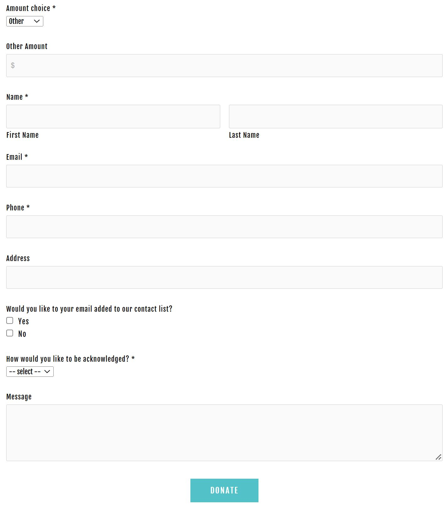

Supporters
Hello and thank you all contour 556 supporters.
We closed our first fundraising campaign through chuffed on 26th June 2021.
We received $9150 through the platform and a further $6600 directly. That is a great start for the 2022 event and it is wonderful to have support from such a wide group of people, some of whom we haven't met yet!
Supporters for 2022
University of Canberra
Gordon Bull & Deborah Clark
The Keir Foundation
David Williams
Sullivan Strumpf
Katharine Glass
Darren Knight
Neil Hobbs
Evan Savescu
Trilogy Network Solutions
Kevin Miller
Christiane Lawin
Claudia Morris
Hester Gascoigne
John Gasson
Paul Ferman
Fiona McIntosh
Dimitri Nikias
Dimitri Nikias
Samantha Ferris
Alastair MacCallum
Nicola Dickson
Bill Magee
Toss Gascoigne
Paris Kami and Dot
Dot Wilkin
4 X Anonymous
Donations
Your donation makes art possible
Your donation helps keep canberra art biennial a free event for all to enjoy.
Donations support artists directly, donations are directed towards artists fees, accommodation and travel.
Donations can be directed towards specific support for particular artists and their project.
We are developing plans for our 4th iteration in October 2022. Please respond if you would like to be added to our contact list.
Donations are tax deductible. Your donations will directly support artists, ensuring their participation in this significant international event.
Please complete the form below
contour 556 is a Deductible Gift Recipient (DGR) listed on the Register of Cultural Organisations under Subdivision 30-B of the Income Tax Assessment Act 1997. All gifts will be received by contour 556- Public Fund. ABN 51 636 189 476